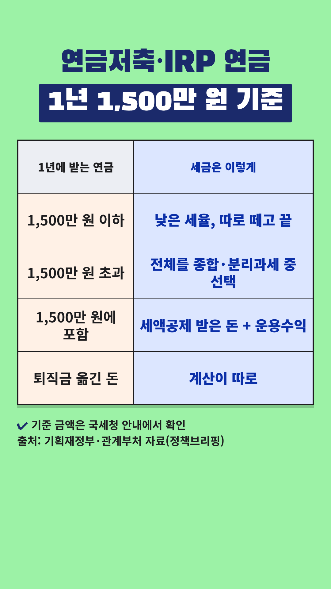

Vrew 작업 카드
2026-10-31-사적연금-1500만원 · 사실 검증과 업로드 전 점검을 통과한 회차입니다. 위에서부터 차례로 복사해 붙여넣으세요.
- 대본 붙여넣기 → AI 목소리(차분한 중년, 0.9~1.0배)
- 장면마다 AI 이미지 문구 복사 → 이미지 바꾸기
- 큰 글자가 있는 장면에 텍스트 추가
- 배경음악(오디오 보관함·Vrew 음원) → 내보내기 mp4
- 제목·설명란·고정댓글 복사해 업로드
0단계 · 첫 장면 강조 제목
Vrew 1번 장면 → 삽입 → 이미지 → 같은 폴더의 title-overlay.png(투명 배경) → 화면 전체 크기로 맨 위에 얹기. 1번 장면의 '큰 글자'는 이 이미지가 대신하므로 따로 넣지 않습니다. 아래 배경은 AI 이미지 자리 표시입니다.
0-1단계 · 숫자 카드 (표 이미지)

표시된 장면들을 하나로 이어 붙이거나 장면마다 → 이미지 바꾸기 → 같은 폴더의 number-N.png를 화면 전체 크기로 넣습니다. 이 장면들에는 AI 이미지와 큰 글자를 넣지 않습니다. 자막은 화면 맨 아래에 두어 표를 가리지 않게 합니다.
1단계 · 대본
1. 대본 붙여넣기
Vrew → 새로 만들기 → 텍스트로 비디오 만들기 → 쇼츠 9:16 → 대본 칸에 붙여넣기
연금저축이나 IRP, 1년에 얼마 받으세요? 1,500만 원을 넘으면 세금이 달라져요. 1년에 그 이하로 받으면 낮은 세율로 세금 떼고 끝낼 수 있어요. 넘으면 넘은 부분만이 아니라 받은 연금 전체를 놓고 다른 소득과 합쳐 계산할지, 정해진 세율로 따로 낼지 골라야 해요. 다만 퇴직금을 옮긴 돈은 계산이 따로예요. 1,500만 원에는 세액공제 받은 돈과 운용수익이 들어가요. 그래서 1년에 받는 금액을 나눠서 조절하는 게 중요해요. 기준 금액은 국세청 안내에서 확인하세요. 개인 상황에 따라 다르니 전문가와 상담하세요.
2~3단계 · 장면별 이미지와 큰 글자
장면 1
나레이션연금저축이나 IRP, 1년에 얼마 받으세요?
AI 이미지통장과 연금 안내 우편물을 함께 들여다보는 60대 한국인 부부, 거실 탁자, 위쪽은 흐린 벽과 창밖 하늘, 따뜻한 자연광, 사실적인 사진 스타일, 세로 9:16 구도, 화면에 글자 없음
큰 글자연금저축·IRP 연금
1년 1,500만 원 기준
장면 2
나레이션1,500만 원을 넘으면 세금이 달라져요.
숫자 카드number-1.png를 화면 전체로 (AI 이미지·큰 글자 대신)
장면 3
나레이션1년에 그 이하로 받으면
숫자 카드number-1.png를 화면 전체로 (AI 이미지·큰 글자 대신)
장면 4
나레이션낮은 세율로 세금 떼고 끝낼 수 있어요.
숫자 카드number-1.png를 화면 전체로 (AI 이미지·큰 글자 대신)
장면 5
나레이션넘으면 넘은 부분만이 아니라
숫자 카드number-1.png를 화면 전체로 (AI 이미지·큰 글자 대신)
장면 6
나레이션받은 연금 전체를 놓고
숫자 카드number-1.png를 화면 전체로 (AI 이미지·큰 글자 대신)
장면 7
나레이션다른 소득과 합쳐 계산할지,
숫자 카드number-1.png를 화면 전체로 (AI 이미지·큰 글자 대신)
장면 8
나레이션정해진 세율로 따로 낼지 골라야 해요.
숫자 카드number-1.png를 화면 전체로 (AI 이미지·큰 글자 대신)
장면 9
나레이션다만 퇴직금을 옮긴 돈은 계산이 따로예요.
숫자 카드number-1.png를 화면 전체로 (AI 이미지·큰 글자 대신)
장면 10
나레이션1,500만 원에는 세액공제 받은 돈과
숫자 카드number-1.png를 화면 전체로 (AI 이미지·큰 글자 대신)
장면 11
나레이션운용수익이 들어가요.
숫자 카드number-1.png를 화면 전체로 (AI 이미지·큰 글자 대신)
장면 12
나레이션그래서 1년에 받는 금액을
AI 이미지벽걸이 달력에 펜으로 동그라미를 치는 손, 숫자는 흐릿하게, 따뜻한 자연광, 사실적인 사진 스타일, 세로 9:16 구도, 화면에 글자 없음
장면 13
나레이션나눠서 조절하는 게 중요해요.
AI 이미지탁자 위에 같은 크기로 나눠 놓은 하얀 봉투 여러 개와 작은 저울, 따뜻한 자연광, 사실적인 사진 스타일, 세로 9:16 구도, 화면에 글자 없음
큰 글자1년 금액 나눠 조절
장면 14
나레이션기준 금액은 국세청 안내에서 확인하세요.
AI 이미지휴대폰으로 안내문을 읽는 60대 한국인 여성, 화면 내용은 보이지 않게, 따뜻한 자연광, 사실적인 사진 스타일, 세로 9:16 구도, 화면에 글자 없음
큰 글자국세청 안내 확인
장면 15
나레이션개인 상황에 따라 다르니 전문가와 상담하세요.
AI 이미지상담 창구에서 상담사와 이야기하는 60대 한국인 부부, 로고 없음, 따뜻한 자연광, 사실적인 사진 스타일, 세로 9:16 구도, 화면에 글자 없음
5단계 · 업로드 정보
제목
연금저축·IRP 연금, 1년 1,500만 원 넘으면 세금이 달라져요
설명란
[음원] 칸은 고른 배경음악으로 채운 뒤 올리세요.
연금저축이나 IRP에서 연금으로 받는 돈이 1년에 1,500만 원 이하이면, 나이에 따라 낮은 세율로 세금을 떼고 끝낼 수 있어요(분리과세). 원하면 다른 소득과 합쳐 신고(종합과세)할 수도 있어요. 1년에 1,500만 원을 넘으면 넘은 부분만이 아니라 받은 연금 전체를 놓고, 다른 소득과 합쳐 계산하는 종합과세와 정해진 세율로 따로 내는 분리과세 중 골라야 해요. 퇴직금을 옮긴 돈(퇴직소득 재원)은 세금 계산이 따로이고, 1,500만 원 기준에는 세액공제 받은 납입금과 운용수익이 들어가요. 그래서 1년에 받는 금액을 나눠 조절하는 게 중요해요. [용어 풀이] - 분리과세: 다른 소득과 합치지 않고 그 소득만 따로 정해진 세율로 세금을 내고 끝내는 방식이에요. - 종합과세: 연금을 다른 소득(사업·임대 소득 등)과 합쳐 누진세율로 계산하는 방식이에요. - 세율 참고(공식 자료 기준): 1,500만 원 이하 연금소득세는 나이에 따라 소득세 3~5%(지방소득세 포함 3.3~5.5%)이고, 1,500만 원을 넘을 때 고를 수 있는 분리과세 세율은 소득세 15%(지방소득세 포함 16.5%)로 안내돼 있어요. 세율은 세법 개정으로 바뀔 수 있어요. [출처] - 기획재정부 「2023년 세법개정안 발표」 문답자료 p.38·상세본 p.56 (2023-07-27): https://www.korea.kr/briefing/pressReleaseView.do?newsId=156582769 - 기획재정부 「2022년 세제개편안 발표」 상세본 p.61 (2022-07-21): https://www.korea.kr/briefing/pressReleaseView.do?newsId=156517644 - 기획재정부 「2025년 세제개편안 발표」 문답자료 p.34 (2025-07-31): https://www.korea.kr/briefing/pressReleaseView.do?newsId=156713628 - 관계부처 합동 「퇴직연금 기능강화를 위한 노사정 합의로 노동자의 든든한 노후소득 보장체계 구축」 p.7 과세체계 표 (2026-10-29): https://www.korea.kr/briefing/pressReleaseView.do?newsId=156787204 - 금융위원회·금융감독원 「2025년 우리나라 연금저축 투자 백서」 붙임1 (2026-06-18): https://www.korea.kr/briefing/pressReleaseView.do?newsId=156767139 [꼭 직접 확인해 주세요] 기준 금액(1,500만 원)과 세율은 세법 개정으로 바뀔 수 있어요. 국세청 안내(국세청 누리집·홈택스, 국세상담센터 126)와 소득세법 제14조·제64조의4에서 직접 확인해 주세요. 이 영상은 정책브리핑에 실린 정부 보도자료를 바탕으로 만들었고, 법령 원문 사이트는 제작 환경에서 열리지 않아 직접 대조하지 못했어요. [음원] [Vrew 작업 후 vrew.md 음원 기록란에서 채우기] [안내] 이 영상은 공공기관 자료를 바탕으로 한 일반 정보이며, 세무·금융 상담을 대신하지 않습니다. 특정 금융회사나 상품을 추천하지 않습니다. 어느 방식이 유리한지는 다른 소득, 나이, 받는 금액 등 개인 상황에 따라 다르니 국세청에서 확인하시고 전문가와 상담하세요. 안내 내용은 2026년 10월 31일 열람 기준이며, 이후 제도가 바뀔 수 있어요. #쇼츠 #연금저축 #IRP #연금소득세 #5060
고정댓글
연금저축이나 IRP 연금, 1년에 얼마씩 나눠 받으실 생각이세요? 받는 방법을 정할 때 가장 고민되는 점을 댓글로 나눠 주세요.
업로드 추천 시간: 저녁 8시